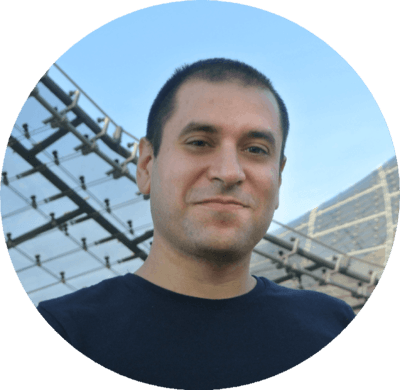

|
 |
Alejandro Sztrajman |


Publications


Patents

|
Estimating Illumination in an Environment Based on an Image of a Reference Object Alexandros Neophytou, Eric Sommerlade, Alejandro Sztrajman, Sunando Sengupta US Patent 2022/0116549 A1. |
Projects
|
Appearance remapping with SVR Application of Support Vector Regression to the translation between different BRDF models in renderers. [Code] |
|

|
Path tracing A path tracer with support for environment map illumination. [Code] |
|
2D Elastic mesh Real-time simulation of a bi-dimensional elastic mesh. [Video] |
|
|
High-order extrapolation A differential equation approach to high-order extrapolation. [Report] |
|
|
Feature Saliency HMM Implementation of the Feature Saliency HMM algorithm, for feature selection on Hidden Markov Models. [Code] |

|
UTIA BRDF Reader Script to read measured BRDF data from the UTIA BRDF database. [Code] |
|
WebGL 3D Engine An interactive WebGL 3D engine with phong shading and support for Bezier surfaces. [Video] [Code] [Try it!] |
|
|
2D FLIP Simulation Fluid Implicit Particle (FLIP) simulation of a 2D incompressible inviscid fluid. [Report] [Code] [Video] |
|
|
2D Lattice-Boltzmann Simulation Interactive simulation of incompressible viscous fluid with Lattice-Boltzmann D2Q9. [Code] [Video] |
Talks
|
High-Dynamic-Range Lighting Estimation from Face Portraits Virtual, 27 Nov 2020 | International Conference on 3D Vision. |
|
 |
CNN-based Face Relighting Microsoft, Reading, UK. 12 Mar 2020. |
 |
Capture and Editing of Material Appearance ETH, Zurich, Switzerland. 5 Feb 2018 | DISTRO-ITN Annual Reunion. |
 |
Introduction to Convolutional Neural Networks IST, Vienna, Austria. 14 Nov 2017 | As part of the Deep Learning Workshop organized by DISTRO-ITN. |
|
Image-based Remapping of Material Appearance Helsinki, Finland, 18 Jun 2017 | Eurographics Workshop on Material Appearance Modelling. |
Teaching
| 2019 | Advanced Deep Learning and Reinforcement Learning | DeepMind/UCL | |
| 2018 | Research Methods and Reading | UCL | |
| 2017 | Scientific Programming in Python | UCL | |
| 2016 | Robotics Programming | UCL | |
| 2016 | Principles of Programming | UCL |
Background
| I did my PhD in Computer Science in the Digital Reality Lab at University College London, under the supervision of Profs. Tim Weyrich and Tobias Ritschel. The funding was provided by a Marie Curie Fellowship granted by the European Commission as part of the DISTRO Innovative Training Network. | |
|
I did an 8-months research internship at Microsoft UK, under the supervision of Eric Sommerlade and Alexandros Neophytou. During this time I worked on HDR light estimation from images using CNNs and GANs. Part of this work was patented and published at the International Conference on 3D Vision 2020. |
| I did a 4-months research internship at Adobe Substance 3D in Clermont-Ferrand, France, under the supervision of Dr Cyrille Damez. During this time I worked on the translation of material appearance between different renderers. | |
| I spent 3 months as visiting student in the Computer Graphics Group at Charles University in Prague. During this time I started working on material appearance remapping under the supervision of Profs. Jaroslav Křivánek and Alexander Wilkie. | |
| I spent 6 months as visiting student in the Columbia Computer Graphics Group at Columbia University in New York City. During this time I worked on physics-based animation of fluids under the supervision of Profs. Christopher Batty and Eitan Grinspun. | |
 |
I hold a Licentiate degree in Physics from the University of Buenos Aires. There, I worked as research student on physics-based simulations at the Astrophysical Flows Group. |